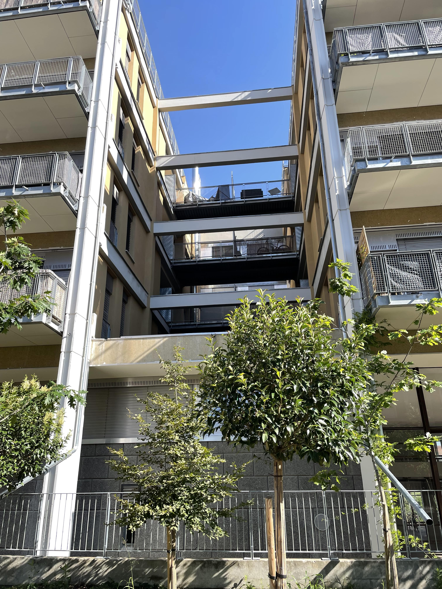

Survolez l'image et agrandissez/réduisez la vue à l'aide de la molette.
Budget: Bâtiment 07 : 4 418 449.15€ HT, Prix m² 1388.10€
Surface: 3 800 m2
Date début: /
Date fin: juillet 2019
Maîtrise d'ouvrage: OGIC
Co-traitant(s): Alexandre Chemetoff & associés
Description:
Le programme prévoyait la construction sur un terrain de près de deux
hectares,
d’environ 25.000 m² de plancher soit 400 logements, autant de places de stationnement enterrées, la
viabilisation et l'aménagement des espaces extérieurs. Le Kube, un bâtiment de bureaux de 1962 est
transformé pour devenir un lieu de vie enviable d’aujourd’hui au sein de cette opération.
La démarche associe un propriétaire : Alstom, une commune : Villeurbanne, une Métropole : le Grand Lyon,
un promoteur : OGIC et un architecte-urbaniste-paysagiste : Alexandre Chemetoff.
Sur le site industriel, en dehors des ateliers et des aires de stationnement, l’immeuble de bureaux
datant de 1962 « le Kube » a intéressé d’emblée Alexandre Chemetoff, pressentant que cette architecture
industrielle rationnelle et le petit parc qui l’entoure pourraient-être le point de départ d’un projet
différent de celui proposé par le plan masse de référence sur lequel ne subsistait aucune trace de
l’existant.
Le Kube :
Le parti pris a été de conserver l’immeuble et ses abords plantés, de penser sa rénovation en imaginant
les caractéristiques distinctives des logements qu’il abritera et en lui donnant le rôle de
bâtiment-témoin, implanté au coeur du quartier.
Nous avons choisi de conserver, de transformer, plutôt que de démolir. Le Kube et ses abords sont les
témoins de cette attitude qui détermine fondamentalement le programme, la composition, l’aménagement,
les modes constructifs et l’esthétique de « Collection ».
Transformer pour innover
Construite autour d’un bâtiment industriel phare, le Kube, Collection propose diverses façons d’utiliser
l’héritage des Trente Glorieuses et crée un cadre de vie d’aujourd’hui.
{kind=link}
{kind=link}
{kind=link}